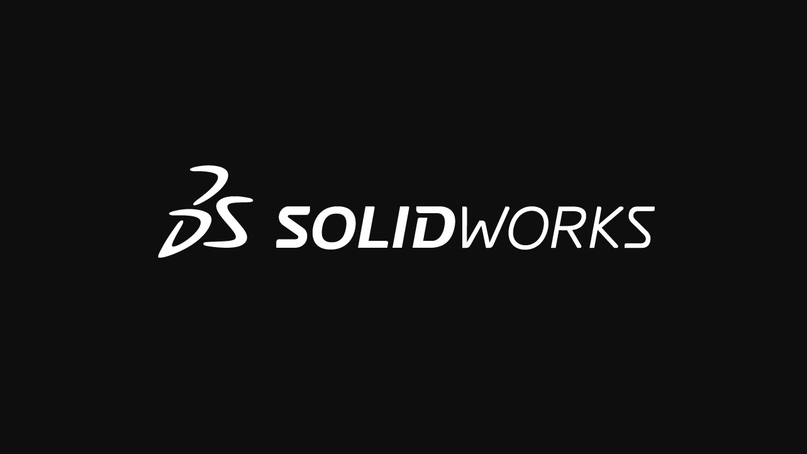
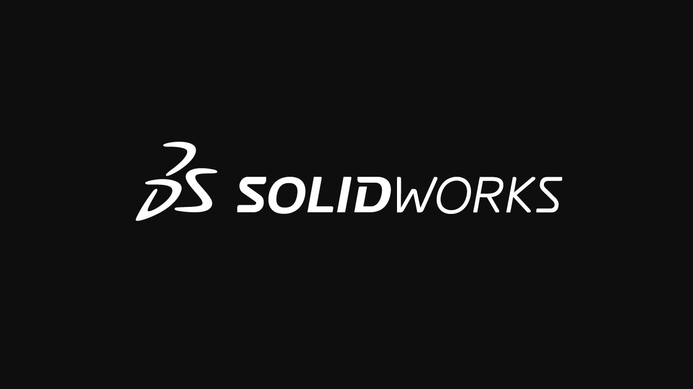

Szakmai tevékenységek:
 Egyetemi öntevékeny körhöz sajnos még nem csatlakoztam, azonban szabadidőmben az alkatrész modellezést próbálom elsajátítani minél jobban a SolidWorks nevű program segítségével.
 Egyetemi öntevékeny körhöz sajnos még nem csatlakoztam, azonban szabadidőmben az alkatrész modellezést próbálom elsajátítani minél jobban a SolidWorks nevű program segítségével.